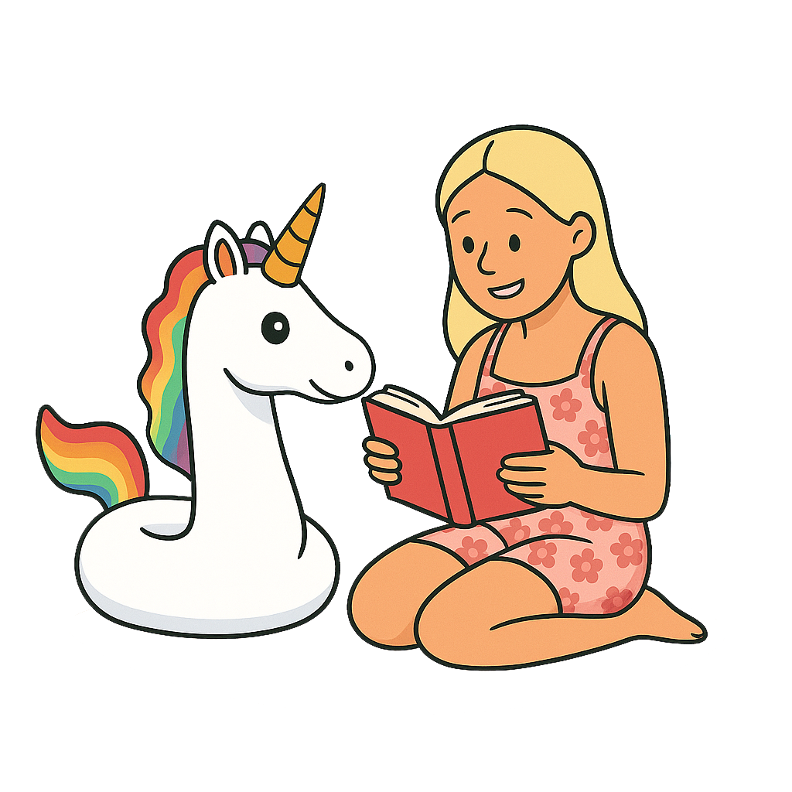

Case Studies
These projects show how I think, build, and solve problems across full stack development, product design, and user experience.
I’m especially drawn to ideas that combine technical depth with real human needs, whether that means building structured accountability workflows or creating community-focused platforms that feel warm, practical, and memorable.
Here are two of my strongest recent projects.
PodFlow
Full Stack Accountability Platform
A private accountability platform built with React and Django REST Framework, designed to help people keep goals moving together.
- Private pods and trusted accountability
- Shared goals, check-ins, and verification workflows
- Role-based permissions and notifications system

Backyard Festival
Community-Powered Event Crowdfunding Platform
A full stack platform for grassroots events where supporters can pledge money, time, or physical items to help bring community ideas to life.
- Flexible money, time, and item pledges
- Supporter and organiser dashboard views
- Strong visual identity and responsive UI design